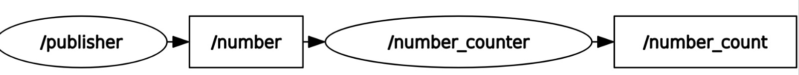
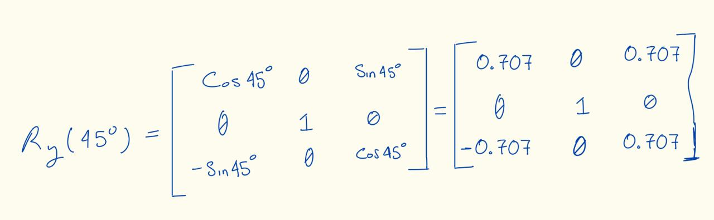
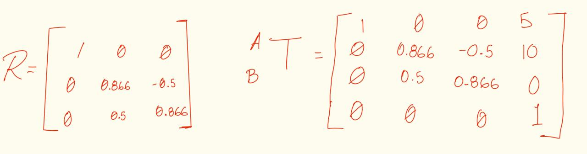
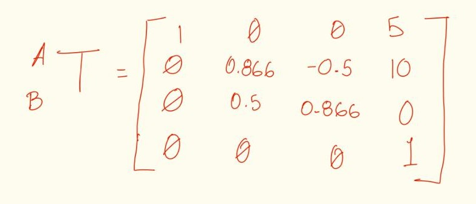
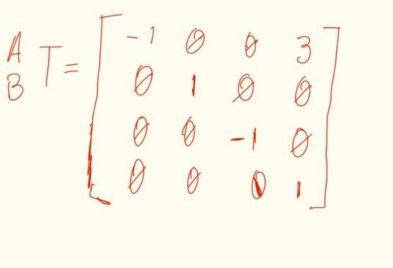
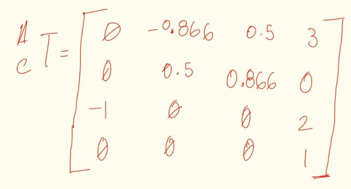

Work 2: Transform Nomenclature
- Proyect: Work 2: Transform Nomenclature
- Equipo / Autor(es): Isaac Antonio Pérez Alemán
- Curso / Asignatura: Applied Robotics
- Fecha: 21/02/2026
1) Activity Goals
- Understand the mathematical representation of point rotations in space.
- Apply the left-multiplication rule for rotations about fixed reference axes.
- Perform visual analysis of geometric diagrams to extract spatial data.
- Integrate rotation and translation vectors into a single coordinate frame.
2) Materials
- No materials required.
3) Analysis
Exercise 1:
First Rotation in YA with angle = 45 degrees.


Second Rotation in XA with angle = 60 degrees.2) Matriz Rx(60°): | 1 | 0.000 | 0.000 | | 0 | 0.500 | -0.866 | | 0 | 0.866 | 0.500 |

Exercise 2:
The frame B is rotating relative to A in X with angle = 30 degrees, with ApB origin = [5, 10, 0].

The rotation in X: we have an angle=30 degrees, we have to make the final matrix

Exercise 3: Analysis of Multiple Linear Displacements
For A_B T we have our origin in ApB origin [3, 0, 0]. So for our first translation we have:

For the second matrix (A_C T), we have to determinate the rotation of C relative to A, we have the origin of C in [3 0 2], so:
